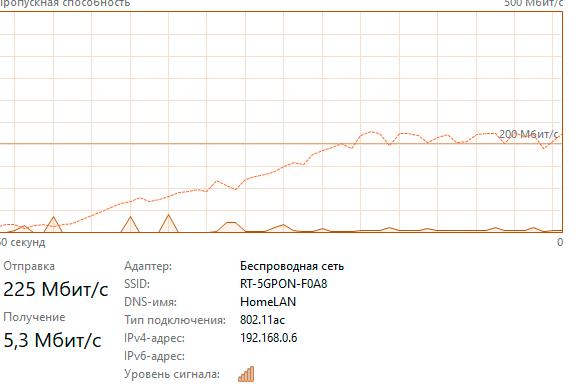

| maid666(Dmitry) | Живу не в своей квартире, я обычный студент, которому исполнилось 18 месяц назад, и естественно я не широкий профессионал в сфере настроек / прошивок / обходов
У меня есть хобби на ютубе и я туда заливаю периодически ролики (буквально каждый день)
До этого я их заливал через мобильный инет, прошивал модем для работы симки с безлимитом и прочее прочее, но вот я переехал и тут есть оптоволокно в виде ужасного Ростелекома.
После замедления ютуба, без всяких лазеек ты не то что загрузить видео не можешь, даже банально его загрузить, поэтому я шерстил шерстил по форумам с целью обхода. Сначала принялся за GoodbyeDPI, но с ним резаная скорость загрузки (около 15-30 мбит, что меня не устраивает), потом начал смотреть другие методы обхода. Наткнулся я на версию zapret под винду, там где нужен WinDivert и прочее. Там было написано мол работает на win 7 но там что то нужно менять, ну или на win 11 arm64, но у меня обычная win 10. Но я решил попробовать. Запустил по инструкции blockcheck, сделал нужные настройки, пинговал rutracker. Нашел нужные настройки, а потом просто поменял их в батнике preset_russia (стояли другие). Смог запустить, и о чудо, моя скорость возросла в два с половиной раза (было под 72 и чуть больше мбит). Рутрекер и прочие запрещенные сайты открываются, все загружается, но есть ощущение, что это не полная скорость, в спидтесте проверял что на загрузку у меня скорость выше 230 мбит точно. Можно ли увеличить скорость, или это уже хороший результат?
Интересный момент, я сижу по вайфаю, а на пк, к которому подключен провод от роутера, скорость все равно маленькая и урезанная (128кбит)
С GoodbyeDPI
С russia_preset и тем мануалом с blockcheck
speedtest
| 2024-08-27T16:08:33.503Z |
| maid666(Dmitry) | НАШЕЛ СПОСОБ ГРУЗИТЬ РОЛИК НА ПОЛНУЮ СКОРОСТЬ
Хоть через blockcheck и сработает, но с goodbyedpi легче.
Прописаны настройки в батнике такие: -f 6 -e 4 --wrong-seq --wrong-chksum --reverse-frag --max-payload -q
Суть в чем: я запускаю GoodbyeDPI, после чего начинаю грузить ролик, а потом через секунд 5-10 закрываю GoodbyeDPI. И я нашел закономерность в том что чем меньше получение пакетов, тем меньше скорость загрузки видео на сервер, поэтому я попробовал с включенным обходом начать загружать ролик и одновременно поставил видео на фон (можно в таком случае ставить на часа 2-3, обычную lofi музыку), позже закрыл обход и в итоге: получение около 4-5 мбит, и скорость закачки выросла с нестабильных 40-70 мбит до 200 мбит+
 | 2024-08-27T21:09:25.410Z |
{kind=link}
{kind=link}
{kind=link}